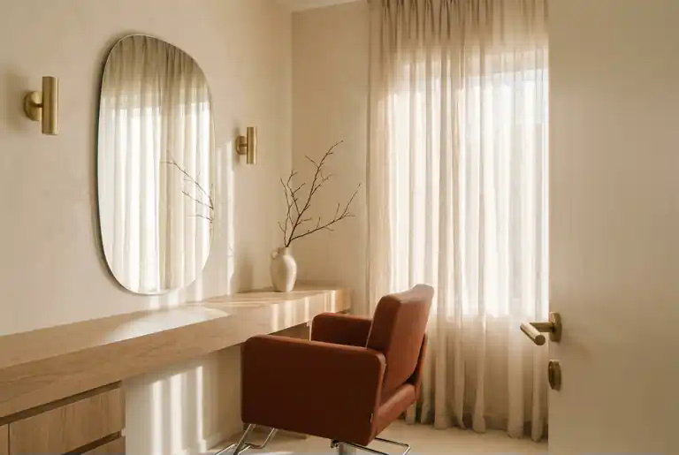

КРАСОТА В ВАШЕМ РИТМЕ
Время
для себя.
Место, где можно замедлиться.
И стать ещё ближе к себе.
Онлайн-запись 24/7 · Без звонков
Внимательно к деталям.

01 / МЕНЮ ЗАБОТЫ
Что порадует вас сегодня?
От маленького обновления
до нового настроения.
Демонстрационные цены · Итоговая стоимость видна до подтверждения записи.
ТИХАЯ РОСКОШЬ БЫТЬ СОБОЙ
Не меняем вас.
Подчёркиваем ваше.
Тёплый свет, любимый напиток и мастер, который слышит. Мы придумали TILO как паузу в большом городе.
Сначала знакомимся с вашими пожеланиями. Затем предлагаем решение.
Цена и длительность известны заранее. Никаких неожиданных услуг.
02 / В ХОРОШИХ РУКАХ
Найдите своего мастера
Одинаковая любовь к делу.
Демо-профили · Портреты и реальные работы добавляются перед запуском.
ПОВОД ПОЗНАКОМИТЬСЯ
Первый визит —
с особым вниманием.
−15% на первую запись с промокодом ПРИВЕТ.
Небольшое начало большой заботы.
Для вашего первого
знакомства с TILO
03 / ПОСЛЕ ВИЗИТА
Самое ценное — ваши слова
Ниже — примеры отзывов, не отзывы реальных клиентов.
04 / МАЛЕНЬКИЕ ПРИВЫЧКИ
Забота продолжается дома
ДО ВСТРЕЧИ В TILO
У вашей заботы
есть место.
Москва · Адрес уточняется перед запуском
Демонстрационный график: ежедневно, 10:00–20:00
Побудьте на своей стороне.
Пока это демонстрационная студия. Адрес, телефон, карта и настоящие фотографии появятся после настройки проекта.